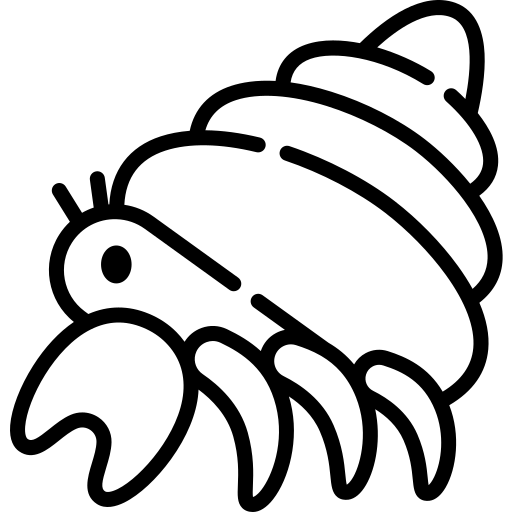

소라게 또는 집게(Hermit crab)는 십각목, 소라게상과 또는 참집게상과(Paguroidea) 중에서 주로 고둥의 패각을 직접 짊어지고 생활하는 갑각류를 가리키는 명칭이다. 새우와 게와 동일한 십각목이지만, 조개 등에 몸을 맞추기 위해 체형을 변형시키고 있다. 몸은 두흉부와 복부로 나뉜다. 집게는 대부분 좌우 비대칭이며, 큰 가위발은 몸을 껍질에 집어넣어 입구를 막는데 사용된다.